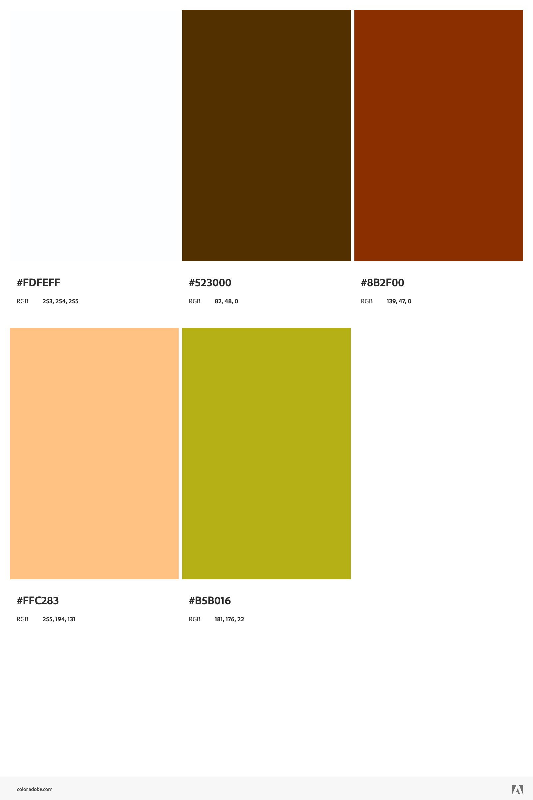

Chamber of Commerce Site Plan
Site Name
Pawnee Chamber of Commerce
Pawnee Indiana is the location of the show Parks and Rec by NBC. I decided to make a chamber of commerce page for this ficticious version of Pawnee, IN
Site Purpose
The chamber of commerce page would promote businesses in Pawnee, community events, and attractions in hopes of drawing other businesses and developments to Pawnee.
Scenarios
- Where can I find information on membership levels and annual costs?
- What events are being held to promote businesses and networking?
- Who are some of the current members?
Color Schema
Green would be used for the main heading and accents, browns would be used for color blocks and backgrounds, and peach would be used for the footer and additional accents.
Typography
The typography for the site would be uniform utilizing the Google Font Almarai. Heavier weights would be used for headings with regular being used for body copy.